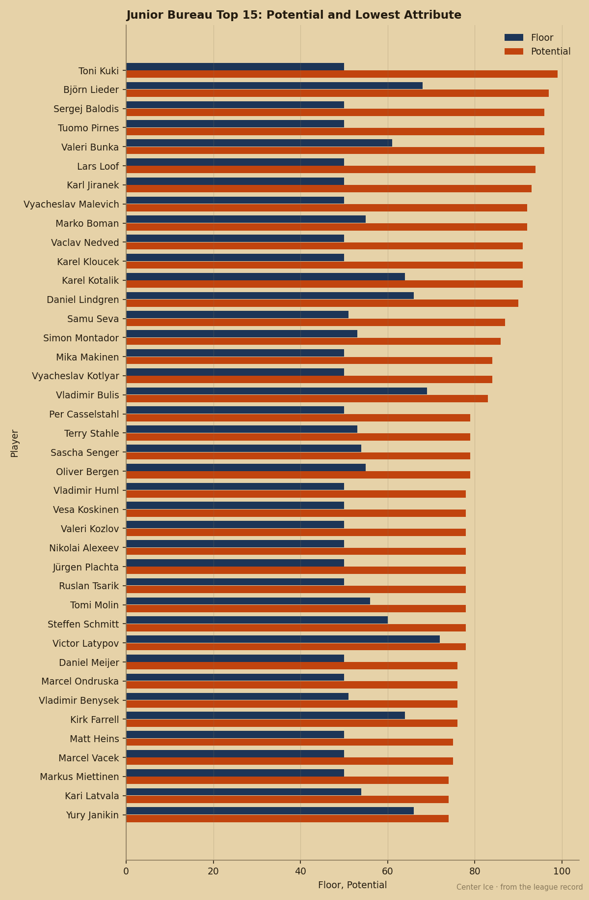
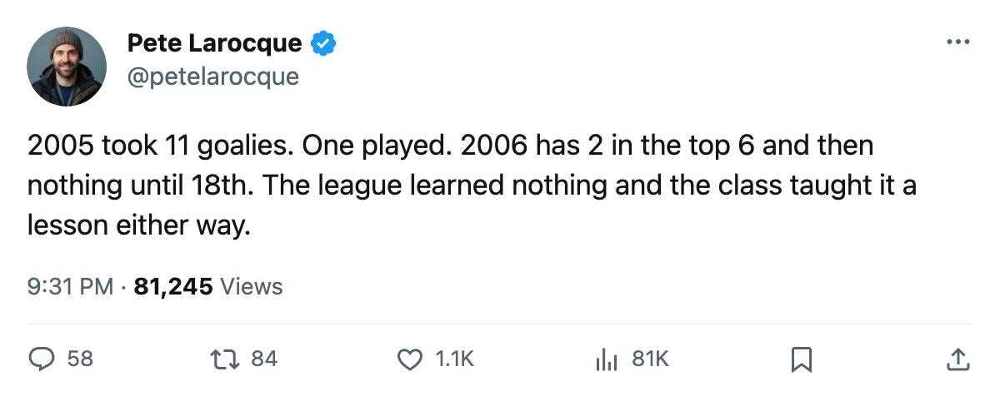
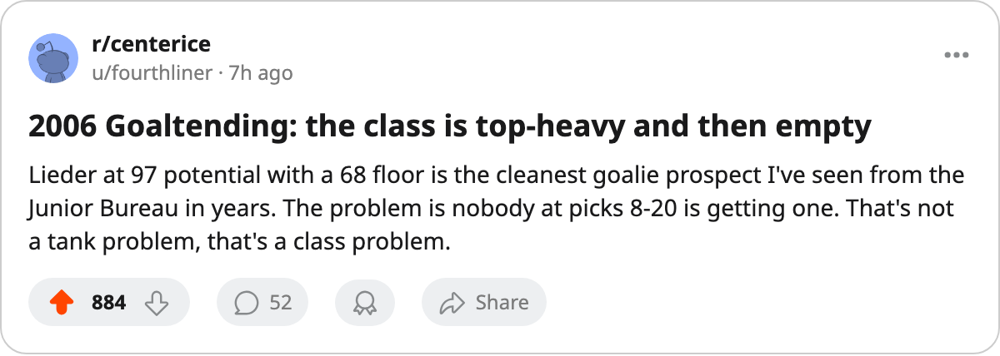

Class of 2006, Goaltenders Edition: 2 in the Top 6, None Until 18th
The Junior Bureau's top 40 has 4 goaltenders. The 2005 draft took 11. The 2006 class will not support that strategy.
 Pete LarocqueScouting editor · The Prospect File
Pete LarocqueScouting editor · The Prospect File
The Junior Bureau ranks 40 prospects in the 2006 class by potential. Four are goaltenders. Two of those four sit in the top 6. The other two don't appear until 18th and 22nd.
That's the shape of June's crease. Björn Lieder carries potential 97, second only to Toni Kuki's 99 in the entire class. Lars Loof sits 6th at potential 94. After Loof, you skip 11 names to Vladimir Bulis at potential 83 and 16 to Terry Stahle at 79.
The 2005 draft reached for goaltenders in volume: 11 went in the first five rounds. One has played a league game. This desk reported that in November. Whether the 2006 class has two in the top 6 because the depth is real or because teams needed help won't be known until someone actually plays one of these kids.

Lieder and Loof are two different problems wearing the same position. Lieder's lowest attribute is REBC at 68. Loof's is REBC at 50, the absolute floor on the Bureau's scale. Lieder's full line reads GSH 76, GSL 76, SSH 73, SSL 73, REBC 68, AGIL 72. Loof's reads GSH 61, GSL 59, SSH 61, SSL 57, REBC 50, AGIL 56.
Every one of Loof's six attributes sits at least 10 points below Lieder's. The potential gap between them is 3. The floor gap is 18. The Book is expecting a lot of development from a prospect graded below his peer on every measurable.
| goaltender | potential | floor | GSH | GSL | SSH | SSL | REBC | AGIL |
|---|---|---|---|---|---|---|---|---|
| Björn Lieder | 97 | 68 | 76 | 76 | 73 | 73 | 68 | 72 |
| Lars Loof | 94 | 50 | 61 | 59 | 61 | 57 | 50 | 56 |
| Vladimir Bulis | 83 | 69 | 72 | 73 | 69 | 70 | 77 | 71 |
| Terry Stahle | 79 | 53 | 57 | 58 | 55 | 59 | 53 | 61 |
After Loof the drop is steep. Bulis at potential 83 carries grades of 69-77, a higher floor than Loof's current grades, but his ceiling is 11 points lower. Stahle at potential 79 has a floor of 53 and grades ranging from 53 to 61, close to where several 2005-class goaltenders sit right now, unsigned or scratched.
The 2005 comparison
Francois Anderson76 went 11th overall to  Buffalo Sabres and has played 1 game at 60.0 minutes. He is scratched. His potential is 59, the lowest of any first-rounder in the class, and his overall is 78, already 19 points above that potential. The Book says his best game is the one he is playing now.
Buffalo Sabres and has played 1 game at 60.0 minutes. He is scratched. His potential is 59, the lowest of any first-rounder in the class, and his overall is 78, already 19 points above that potential. The Book says his best game is the one he is playing now.
Behind him, the 2005 class goaltenders sit at moderate to low potential: Sami Sundblad63 at potential 82 (pick 63,  Florida Panthers, scratched), Karel Zizka62 at 73 (pick 69,
Florida Panthers, scratched), Karel Zizka62 at 73 (pick 69,  Columbus Blue Jackets, scratched), Vladimir Zib65 at 55 (pick 68,
Columbus Blue Jackets, scratched), Vladimir Zib65 at 55 (pick 68,  Minnesota Wild, scratched). None has played.
Minnesota Wild, scratched). None has played.
What this means for the lottery
If you pick in the top 5 and want a goaltender, Lieder is the clear choice. His grades are already at a level that several current league goaltenders would accept. His floor of 68 means the Book is not guessing about his current ability.
Loof at 94 potential on a 50 floor is a different question. At forward, a 99-on-50 spread is a bet you can manage. You can dress the kid, limit his minutes, let him grow. Goaltending development requires game reps against the next level's shots. You cannot dress a goaltender for 5 minutes and call it development. The 2005 class proved that: the one goaltender with a rep has 1 game and is scratched.
If you pick 7th through 17th, the 2006 class does not have your goaltender at a position worth spending. Bulis at potential 83 is a late-second or early-third target in most classes. Teams in that range will take a forward or a defenseman because the crease is empty.
The 2005 draft was the league saying "we need goaltenders, so we will draft them in bulk." The 2006 class is the punishment for that: two in the top 6, then nothing worth a first-round pick for another year.

